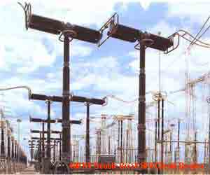
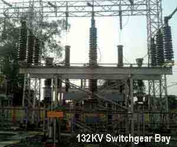

Definition of Switchgear
A switchgear or electrical switchgear is a generic term which includes all the switching devices associated with mainly power system protection. It also includes all devices associated with control, metering and regulating of electrical power system. Assembly of such devices in a logical manner forms a switchgear. This is very basic definition of switchgear.
Switchgear and Protection

We all familiar with low voltage switches and re-wirable fuses in our home. The switch is used to manually open and close the electrical circuit in our home and electrical fuse is used to protect our household electrical circuit from over electric current and short circuit faults. In same way every electrical circuit including high voltage electrical power system needs switching and protective devices. But in high voltage and extra high voltage system, these switching and protective scheme becomes complicated one for high fault electric current interruption in safe and secure way. In addition to that from commercial point of view every electrical power system needs measuring, control and regulating arrangement. Collectively the whole system is called switchgear and protection of power system. The electrical switchgear have been developing in various forms.
Switchgear protection plays a vital role in modern power system network, right from generation through transmission to distribution end. The electric current interruption device or switching device is called circuit breaker in switchgear protection system. The circuit breaker can be operated manually as when required and it is also operated during over electric current and short circuit or any other faults in the system by sensing the abnormality of system. The circuit breaker senses the faulty condition of system through protection relay and this relay is again actuated by faulty signal normally comes from current transformer or voltage transformer.
A switchgear has to perform the function of carrying, making and breaking the normal load current like a switch and it has to perform the function of clearing the fault in addition to that it also has provision of metering and regulating the various parameters of electrical power system. Thus the switchgear includes circuit breaker, current transformer, voltage transformer, protection relay, measuring instrument, electrical switch,electrical fuse, miniature circuit breaker, lightening arrestor or surge arrestor, electrical isolator and other associated equipment.

Electric switchgear is necessary at every switching point in the electrical power system. There are various voltage levels and hence various fault levels between the generating stations and load centers. Therefore various types of switchgear assembly are required depending upon different voltage levels of the system.
Besides the power system network, electrical switchgear is also required in industrial works, industrial projects, domestic and commercial buildings.
 by
by